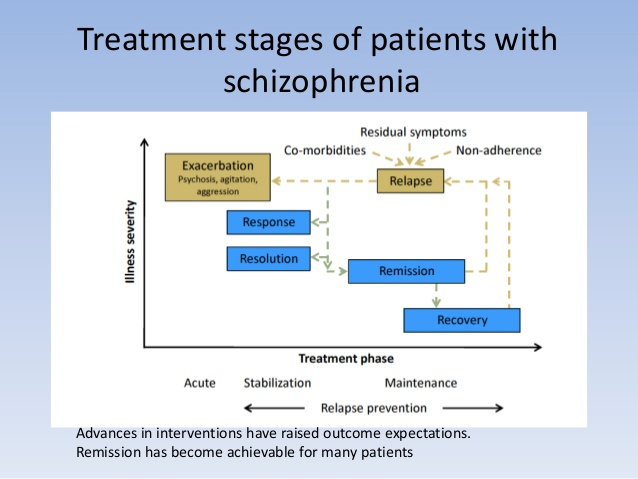
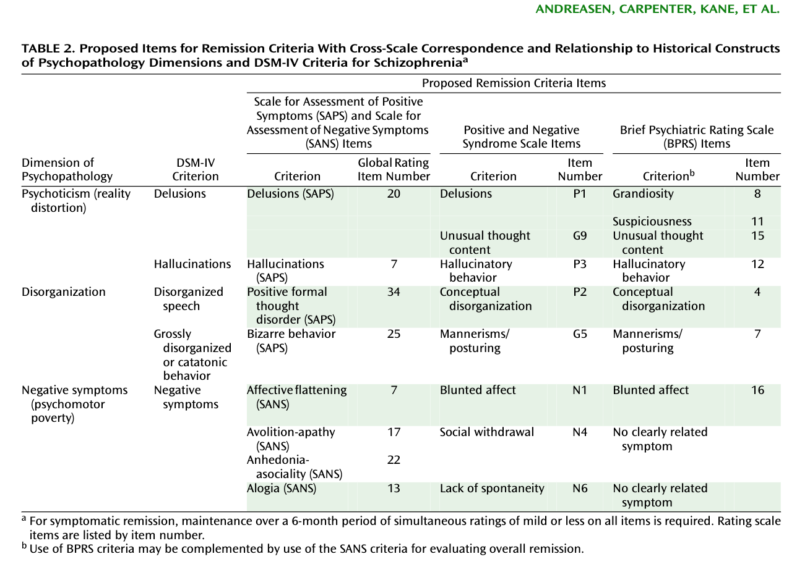
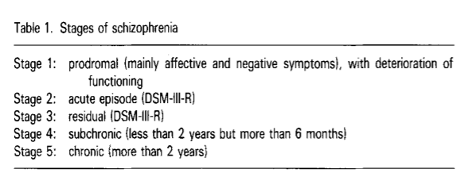
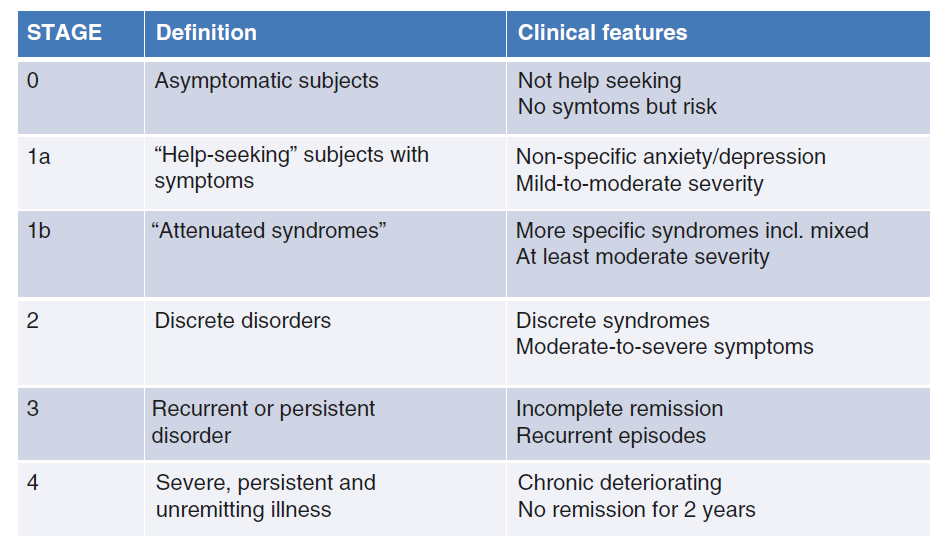

23 조현병의 치료와 자연경과
Natural course of schizophrenia treatment
23.1 치료 과정
앞장에서 살펴본 바와 같이 장기간 약물 투여에 대해 찬반양론이 있지만, 이러한 논란은 어쩌면 클로르프로마진이 도입되기 전 조현병 환자들이 겪었어야만 했던 비참한 운명을 망각했기 때문인지도 모른다.[1] 1950년 이전에 정신과 병동에 한번이라도 입원하게 된 조현병 환자의 절반 이상은 평생 동안 10년 이상 병동 생활을 해야만 하였다. 이들은 사회에 편입되어 재활의 길을 걷는 것은 고사하고, 폭력과 유기의 대상이 되기 쉬웠으며, 많은 환자들이 일찍 목숨을 잃었다. 그나마 재활치료가 강조되고, 치료의 중심이 폐쇄병동에서 지역사회로 옮겨온 것도 환자들이 약을 먹는다는 조건 하에서 였다. 기이하고 끔찍하기까지 하였던 조현병 환자들의 겉모습이 조금씩 누그러져, 외관만 봐서는 환자인지 알 수 없는 상태가 된 것도 약물 치료의 도입으로 혼란형, 강직형 환자들의 비율이 눈에 띄게 줄어들었기 때문이다.[2]
이렇게 보면 항정신병 약물에 대한 실망과 비판은 기대 수준이 너무 높아졌기 때문인지도 모른다. 신약의 개발은 지극히 더딘 반면, 완벽에 가까운 치료에 대한 요구는 급격히 늘어났다. 애초에 항정신병 약물은 흥분 상태에 있는 급성기 환자의 정신병적 증상을 누그러뜨려, 정신치료가 가능할 정도의 상태로 만드는 것이 목적이었다. 그런데 현재는 동일한 약물이 음성/인지 증상을 개선해야 함은 물론, 궁극적인 뇌 기능의 정상화까지 이룩할 것을 기대하고 있다. 따라서 항정신병 약물의 한계와 미비점을 공격하기 보다는, 그 분명한 효과와 가시적인 이득에 더 초점을 맞추는 것이 공평한 논의의 시작일 것이다.
23.1.1 반응, 관해, 재발의 조작적 정의

조현병의 약물 치료를 논하기 전에, 조현병의 자연 경과와 관련하여 문헌에서 흔히 등장하는 반응, 관해, 재발, 회복이라는 용어들에 대해 짚고 넘어갈 필요가 있다.(그림 23.1) 1988년 맥아더 재단은 우울증 연구에 있어, 연구자마다 질병 경과 중 임상적으로 매우 중요한 시점에 대해 서로 다른 명칭과 정의를 사용하기 때문에 연구에 혼선이 빚어진다는 점을 지적하였다. 이에 Frank 등[3]은 주요 우울증에 있어서 관해(remission), 회복(recovery), 재발(relapse), 회복 후 재발(recurrence)에 대해 조작적 정의를 내놓았다. 이에 영향을 받은 정신의학자들은 양극성 장애, 조현병을 비롯한 타 질환에 대해서도 유사한 식의 정의를 제안하였고, 점차 정신의학의 표준적 용어로 자리잡았다. 그러나 삽화(episode)를 기준으로 질병 경과를 기술하는 정동 장애에서 비롯된 개념들을 조현병에 적용할 때 잘 들어맞지 않는다는 어려움이 있다. 예를 들어 정동장애에서 삽화와 삽화의 구분은 그 사이에 증상이 전혀 없이 회복된 기간이 4~6개월 이상 지속되었느냐로 결정한다.[3] 따라서 재발(relapse)과 회복 후 재발(recurrence)이 명확히 구분된다.1 물론 조현병에서도 정신병적 증세가 심해지는 시기를 삽화라 지칭하지만, 정동 장애처럼 삽화와 삽화 사이에 과연 회복되었는지가 불분명하기 때문에, 재발과 회복 후 재발의 구분은 무의미하다. 용어들의 조작적 정의를 살펴보기 전에 이러한 정동 장애와의 차이를 염두에 둘 필요가 있다.
1 아직 회복되지 않은 상태 즉 선행 삽화가 끝나지 않은 상태에서 증상이 악화되면 재발이라 하고, 6개월 이상 증상이 없는 상태가 지속되었던 이후에 다시 증상이 도지면 회복 후 재발이라 한다.[4]
23.1.1.1 반응
반응(response)이란 약물로 인해 임상 증상의 의미있는 호전이 있었는가를 의미한다. 즉 약물이 듣기는 하는가라는 기본적 질문에 대한 답이다. 만약 충분한 기간 동안 약물을 투여했음에도 반응이 없다면 약물 교체를 고려해야 한다. 그러나 그 기준은 연구자마다 각양각색이다. 최소 기준으로는 BPRS 혹은 PANSS 총점이 약물 사용 전에 비해 20% 이상 감소해야 반응이 있다고 본다. 그러나 이 비율은 20~50% 사이에서 제각각이며, 반응 여부를 결정하는데 충분한 기간은 어느 정도인지에 대해서도 기준이 없다. Leucht 등[5]는 적어도 PANSS 총점이 50% 이상 감소해야 반응이 있다고 볼 수 있으며, 치료저항성 환자에 한하여 이 기준을 25% 이상으로 낮출 수 있다고 하였다. 이렇게 보는 이유는 PANSS 25% 감소는 전반적 임상 인상 - 호전 척도(Clinical Global Impression-improvement, CGI-I)에서 최소 호전(minimally improved)에 불과하며, 50%는 감소해야 상당한 호전(much improved)에 해당되기 때문이라고 하였다. 반응 여부를 최종적으로 판단하기 위해 기다리는 시간은 대체로 투여 후 최대 4주 정도를 잡고 있다.
23.1.1.2 관해
조현병 경과를 삽화로 구분할 때, 관해(remission)란 이번 삽화가 어느 정도 해결되었음을 의미한다. 역시 명확한 정의는 개념은 없으나, 반응(response)과는 달리 퍼센트가 아닌 절대적 기준이 주로 사용된다. 조현병의 관해 연구 실무그룹(The Remission in Schizophrenia Working Group, RSWG)은 2005년 관해에 대한 기준안을 제시하였다.(그림 23.2)[6] 정신병적 증상, 혼란 증상, 그리고 음성 증상이라는 세가지 요인에 대해 따로따로 관해여부를 평가하는데, 기준 표에는 이 각각에 관련된 평가도구의 항목들이 등재되어 있다. 예를 들어 정신병적 증상이 관해되었다고 하려면, PANSS의 P1, G9, P3가 모두 경도(mild) 이하2이거나, BPRS의 8, 11, 12, 15번 항목이 모두 경도 이하여야 한다. 2020년 한국에서 전문가들의 의견을 모아 작성한 관해 기준에서는 PANSS 기준으로 양성 및 음성 증상에 해당되는 모든 항목이 2점 이하여야 한다.[7]
2 PANSS에서 경도는 3점을 가리킨다.

이렇게 평가 도구로 측정한 증상이 기준 이하인 것을 증상적 관해(symptomatic remission)라고 한다. 중간에 약간씩 증상의 호전과 악화가 있을 수 있지만, 추적 기간 중에 한번이라도 PANSS 기준으로 4점 이상이 기록되면 관해 상태를 유지했다고 하기 어렵다. 증상적 관해가 정식 관해(full remission)로 인정되려면 증상적 관해 상태를 적어도 6개월 이상 유지하여야 한다.[8,9] 이에 비해 한국의 정신과 의사들이 생각하는 관해란 좀더 기준이 엄격하여 증상적 관해가 적어도 1년 이상은 유지되어야 정식 관해라고 생각한다.[7] 시간 기준만을 보면 정식 관해는 정동 장애의 회복(recovery)과 거의 유사한 개념이다. 그러나 조현병에서의 관해란 증상이 완전히 없어진 상태를 말하는 것은 아니다. 기준이 이렇게 정해진 것은 증상이 경도 이하면 사회적, 직업적 기능 유지에 큰 문제가 없다고 보기 때문이다. 또한 현재의 치료법으로는 정신병적 증상을 완전히 없애기는 어렵다는 현실을 인정하는 것이기도 하다.[5]
암 환자의 경우 부분 관해(partial remission)과 완전 관해(complete remission)를 구분해서 사용한다. 후자는 치료에 반응하여 암과 관련된 제반 증상이 완전히 사라지는 것을 말한다. 암 환자의 경우, 완전 관해가 5년 이상 지속되면 보통 완치되었다고 선언한다. 그러나 완치란, 더 이상 치료하지 않아도 재발하지 않는다는 선언이자 보장인데, 실상 어떤 경우에도 암이 절대로 재발하지 않을 것이라 확신할 수 없다. 따라서 일부 의사들은 질병의 증거 없음(no evidence of disease, NED) 정도로 표현을 완화시키기도 한다.[10] 조현병의 경우에도 완전 관해가 몇 년 이상 지속되면 NED의 판정을 내릴 수 있지 않을까 기대해보나, 아쉽게도 완전 관해의 가능성을 뒷받침하는 자료 자체가 없는 실정이다.
23.1.1.3 재발
재발(relapse)은 일단 관해 상태를 유지했었던 환자를 기준으로 한다. 한번도 관해 상태에 도달하지 못했다면 재발이라는 표현은 부적절하다. 재발의 명확한 기준은 세워져 있지 않으며, 임상 시험에서도 제각각 다른 기준을 적용하고 있다. 일반적으로는 PANSS나 BPRS 점수의 증가를 보거나, CGI 및 임상적 소견으로 증상 악화를 판정한다. 이에 더불어 점수와 관계없이, 증상 악화로 입원이 필요했거나, 자해/타해의 위험이 있었다면 재발한 것으로 정한다. PANSS가 몇 점 이상으로 높아져야 하는 지에 대해서는 기준이 애매하다. 기준치에 비해 10점 이상, 혹은 25% 이상 증가하는 것으로 정하기도 한다. 어떤 임상 시험은 양성 증상을 묻는 항목이 하나라도 4점 이상이 되면 재발로 정의한다. [11,12]
증상이 악화된 기간도 문제가 된다. 잠깐 악화되는 듯 했다가 며칠 기다렸더니 자연적으로 좋아졌다면, 이를 재발로 봐야할 지 애매하다. 이에 대해서는 의견 차이가 심해서 이틀 이상만 지속되어도 재발로 보아야 한다는 연구자도 있고, 적어도 2주 이상은 지속되어야 한다는 견해도 있다. 한국에서 조사된 결과에서는 PANSS P7(공격성)과 G8(비협조성)이 6점 이상인 상태가 이틀 이상 지속되면 분명한 재발로 보고 있다.[7] 설령 점수 변화에 대한 기준이 정해진다 하더라도, 어느 시기를 기준치로 삼느냐도 문제가 된다. 임상 시험을 할 때는 고민없이 연구 시작 시점을 기준치로 정하지만, 실제 임상에서는 애매해진다. 마지막 관해 시의 점수를 기준으로 할 것인지, 과거 가장 증상이 호전되었을 때를 기준으로 할 것인지 등에 대해서 누구도 뚜렷한 답을 내놓지 않는다.
23.1.2 회복
23.1.2.1 완치 판정
관해에 대해서는 여러가지 조작적 정의(operational definition)가 비교적 명확히 내려져 있음에 비해, 회복(recovery)에 대해서는 그 개념조차 통일되어 있지 않다. 일단 완치(cure)에 근접한 개념으로서의 회복이란 약물을 복용하지 않는 상태에서, 양성, 음성, 일반 증상을 막론하고 어떤 증상도 나타나지 않는 상태가 1년 혹은 2년 이상 지속되는 것을 의미한다.[7,8] 드물지 않게 조현병 환자들이 완치 판정을 내려달라고 요구할 때가 있다. 아무래도 조현병 진단을 받으면 면허취득이나 직업적 기회 등에서 제한이 가해지다 보니, 환자의 기능적 수준에 맞춰 완치 판정을 내리고 싶은 유혹을 받게 된다. 그러나 완치란 한번도 정의된 적 조차 없는, 모든 사람들의 희망 속에나 존재하는 무지개와 같은 개념이다. 감염성 질환이나 골절 등과 같이 질병 원인이 분명하고, 제거하는 방법도 명백한 경우를 제외하고는 완치란 사용되어서는 안 되는 개념인지도 모른다. DSM에서도 완치에 대한 언급이 없으며, 대부분의 의학 교과서에도 완치에 대한 논의가 빠져있다. 유용한 조작적 정의 중 하나는, 더 이상 치료하지 않아도 재발하지 않을 것임이 확실해질 때이다.[13] 그러나 조현병은 물론 어떤 정신질환도 재발하지 않는다는 보장을 할 수 없다. 더군다나 발병 전에 이미 신경발달학적 이상이 있을 것으로 간주되는 조현병의 경우, 병의 원인을 근본적으로 제거할 길도, 재발을 원천적으로 봉쇄할 방법도 존재하지 않는다.
| 회복의 구분 |
|---|
| 임상적 회복 (clinical recovery) |
| 기능적 회복 (functional recovery) |
| 개인적 회복 (personal recovery) |
23.1.2.2 기능적 회복
따라서 회복에 대한 기준을 완치에 두기 시작하면 치료에 대한 비관적 전망과 환자에 대한 사회적 편견만이 강화될 우려가 있다. 이런 우려 때문에 연구자들은 신경학적 질환을 모델로 삼아 회복에 대한 느슨한 기준을 세우고자 한다. 척수 손상이나 뇌졸중을 겪었다고 했을 때, 병전 기능을 완전히 회복하는 것은 불가능한 목표일 지도 모른다. 그러나 재활 치료를 통해 상실된 기능을 보완하고, 예전과 같이 의미있고 풍요로운 삶을 되찾을 수 있다면 회복으로 볼 수 있을 것이다. 2002년 Liberman 등[14]은 임상적 회복(clinical recovery)에 대조되는 개념으로서 기능성 회복(functional recovery)을 제안하였다.(표 23.1) 그에 따르면 적어도 2년 이상 다음과 같은 상태가 유지되었을 때 기능적으로 회복되었다라고 말할 수 있다: 1) BRPS에서 모든 항목의 점수가 4점(중등도) 이하, 2) 절반 이상의 기간 동안 고정된 직업을 유지했거나 학업에 매진하였음, 3) 독립적으로 생활할 수 있으며, 경제적으로 원조를 받았더라도 일상 생활의 자기 관리가 가능함, 4) 적어도 1주에 1회 이상 가족, 친지 등 타인과 직접 혹은 간접적으로라도 접촉함.
정신질환 뿐만 아니라 현대 사회에 만연한 대부분의 만성 질환은 이러한 느슨한 정의를 적용해야 할 것처럼 보인다. 만성 질환들은, 겉으로 드러난 증상이 경감되었더라도 질병 과정 자체는 끊임없이 진행중인 경우가 많으며, 질병 과정이 멈췄다 하더라도 장기의 손상 및 기능 저하는 비가역적일 수도 있다. 조현병의 경우 양성 증상을 만들어내는 뇌내 이상 현상이 멈췄다 하더라도, 이미 자신감의 결여, 환자라는 낙인, 깨어져버린 인간관계, 직업적/학업적 기회의 상실 등 돌이킬 수 없는 자아의 손상을 겪는다. 단순히 양성 증상이 나타나지 않는다고 해서, 이러한 잊혀지지 않고 돌이킬 수도 없는 상처들을 없었던 것으로 치부할 수는 없다. 따라서 조현병의 회복이란, 질병으로 인해 생긴 비정상적 상태를 원점으로 되돌리는 것이 아니라, 한번도 경험해보지 못한 새로운 삶과 자아상을 구축해나가는 것을 의미할 것이다.[15]
23.1.2.3 기능이라는 잣대
이러한 느슨한 정의는 조현병을 앓고 있는 환자나 주변인들에게 긍정적이고 희망적인 미래를 꿈꿀 수 있게 해주었다는 의미가 있으나, 어떤 면에서는 비관적 전망을 은근슬쩍 눈속임 한 것에 지나지 않는다는 비판을 받기도 하였다.[16] 또한 느슨한 정의라 할 지라도, 여전히 사회적 기능이나, 수행 성적을 강조한다는 점은 변함이 없다. DSM에서 질병을 정의할 때는 거의 예외없이 직업적 기능, 대인관계, 자기관리 기능에서의 현저한 손상이 포함된다. 따라서 이러한 기능을 되찾아 사회구성원으로서 맡은 바를 수행하는 것이, 회복의 중요한 기준이 된다. 특히 강조되는 것은 나이에 걸맞은 역할 인식, 주위의 지도없이 일상 생활 영위, 사회적 관계에 참여, 주거의 독립성 등이다.[17]
그러나 인간의 가치가 그가 수행하는 직업적, 사회적 기능으로만 정의되는 것은 아니다. 회복했다고 판단하는 기능 수준을 누가 정하는 것인지도 애매하다.3 결국 그 정도는 사회가 환자에게 요구하는 과제에 지나지 않으며, 이는 환자만의 고유한 특성과 독특한 상황과는 별 관계가 없다. 애초에 질병이 기능 수준에 의해 정의되는 것 자체가 그다지 과학적이지 못하며, 따라서 기능을 만회해야 회복에 이른 것이라 정의하는 것도 무리가 있다.[18]
3 일하지 않는 자여, 먹지도 말라: 신약성서 데살로니가후서 3장 10절에 등장하는 표현으로 저자인 사도 바울이 테살로니카 신자들에게 보내는 권면이자 경고였다. 이 문구는 종교개혁을 거치면서 프로테스탄트 노동 윤리로 자리잡았고, 노동과 이를 통한 부와 안락의 추구는 삶의 목적이 되었다. 기독교적 전통은 Durkheim, Parsons, Merton 등을 위시한 사회학자들로 하여금 기능주의(functionalism)를 낳게 하였다. 이에 따르면 사회 구성원은 각자가 맡은 기능을 완수함으로써 전체 사회의 안정과 질서를 도모해야 하는 의무가 있다. 한마디로 말하면, 정신질환의 기능적 회복은 다시금 이런 기능들을 수행할 수 있는 상태로 되돌아온다는 뜻이다.
23.1.2.4 개인적 회복
철저한 임상적 관해, 그리고 무슨 수를 써서라도 재발을 막아야 한다는 의학적 모델에서의 치유 모델은 그만큼 공격적인 치료를 요구하며, 환자에게 희생을 강요하는 면이 없지 않다. 이에 비해 소비자, 즉 환자들의 입장은 최소한의 치료를 통해 당사자가 만족할 정도에 도달할 수 있다면, 회복으로 보아도 무방하지 않느냐고 항변한다. 정작 중요한 것은 환자 본인의 삶에 대한 만족감이요, 자기 삶에 긍정적 의미를 찾을 수 있느냐는 것이기 때문에, 회복의 정의가 소비자 중심으로 바뀌어 가는 것은 막을 수 없는 흐름이다.[15] 이와 발맞추어 등장한 개인적 회복(personal recovery)이라는 정의은, 질병을 적극적으로 수용하며, 성장의 기회로 받아들이고, 긍정적 자아상과 함께, 주위와 사회의 편견에 적극적으로 부딪혀 나가는 것을 의미한다.[19]
개인적 회복은 생물학적 완치나 기능적 회복에 얽매이지 않는다. 적지 않은 환자들은 현저한 정신병적 증상을 겪고 있음에도 불구하고, 자신에게 아무런 문제가 없고, 오히려 이러한 경험을 통하여 존재의 더 높은 단계로 나아갈 수 있다고 믿는다.[20,21] 인권 운동과 사회적 구성개념4으로서의 정신질환 이론에 영향을 받은 이들은, 정신질환을 문제시하는 사회의 고정관념과 치료에 대한 억압적 관행, 기능 만을 강조하여 장애를 못박아 버리는 경향만 타파해나갈 수 있다면 정신질환은 아무런 문제될 것이 없다고 주장한다.[22]
4 사회적 구성개념(social construct): 후기구조주의와 포스트 모더니즘의 영향을 받은 철학적 흐름으로, 우리가 현실로 믿고 있던 것들 중 많은 부분이, 사실은 사회 구성원들간의 합의에 불과한 것이라는 이론이다. 이 이론의 핵심은 언어가 현실을 있는 그대로 비추는 것이 아니라, 역으로 실재를 재구성하거나 없는 현실을 창조한다는 것이다. 사회적 합의를 통해 공유된 의미를 담게 된 언어는, 세상을 이해하는 프레임을 구조화하거나 제한한다. 따라서 언어 사용자는 언어에 담겨진 의미를 비판없이 진실로 받아들이게 된다. 1966년 사회학자 버거(Peter Berger)와 루크만(Thomas Luckman)의 “실재의 사회적 구성(The Social Construction of Reality)”이 출간된 이후 큰 반향을 얻었다.
23.1.2.5 회복과 병식
질병에 대한 이러한 개념 변화와 부상하는 자기결정권으로 말미암아, 병식과 상관없이 약물 치료를 거부하는 환자가 늘어날 것임을 쉽게 예상할 수 있다. 조현병으로 인한 환자의 주관적 고통과 관련하여 흔히 이야기되는 것이 병식 역설(insight paradox)이라는 현상이다.[23] 이는 환자가 자신의 상태에 대해 온전한 병식을 획득하면 오히려 심한 우울감에 빠지면서 주관적 고통이 심해진다는 것이다. 게다가 병식을 획득한다는 것의 이면에는, 사회에서 강요하는 정신질환에 대한 편견과 억압에 굴복하여, 자신의 운명을 타인의 결정에 맡긴다는 부정적 면도 도사리고 있다. 이와는 대조적으로 일부 환자들은 정신병적 증상을 매혹적인 경험으로 받아들이고 긍정적 의미를 부여한다.[24] 심지어 일부 환자들은 편집증을 치열한 경쟁 사회에서 유용한 생존 전략으로[25], 환청을 동반자나 조력자 또는 위안을 주거나 흥미를 불러일으키는 경험으로 받아들인다.[26] 병식 역설의 측면에서 바라본다면, 이들은 주위 사람들에게 피해를 입힐 지 몰라도, 스스로는 우울을 잘 극복해나가는 경우가 될 것이다.
언어적 환청에 대한 긍정적 또는 부정적 관점은, 주로 환청을 어느 정도 통제할 수 있는지에 대한 환자의 느낌과 연관된다.[26] 그래서인지 환청에 대한 인지치료적 접근은 환청에 대한 통제력을 되찾고, 어쩔 수 없는 경험에 대해서는 받아들이게 하는데 주력하고 있다.[27] 그런데 우려되는 것은 환청을 긍정적으로 받아들이느냐, 스스로 얼마나 통제할 수 있느냐에 따라 오히려 환청이 더 오래 지속될 위험이 있다는 것이다.[28,29] 기분 좋은 환청은 당연히 지속되고, 부정적인 환청은 대응책으로 긍정적인 내용의 환청으로 대체함으로써 지속될 가능성이 있다.[30,31] 그렇다면 환청의 인지치료에서 지향하는 통제력, 수용과 같은 목표가 오히려 환청을 지속시킬 위험을 지닐 수도 있다는 뜻이 된다.
과대망상이 심할수록 우울증이 적고 자부심이 높으며 스스로에 대한 부정적 평가가 적다는 보고가 있다.[32] 또한 과대망상은 무의식에 깔려있는 무가치감 및 무력감에 대한 보상으로 발생한다는 의견도 있다.[33] 일부 환자들은 피해 망상과 불안 속에서도 지지적인 내용의 환각이나 망상을 같이 보고하는데. 이는 현실 생활에서는 찾을 수 없는 보호와 위안을 받고픈 욕구에 대한 보상으로 이해된다. 이런 경우 환청과 망상을 제거하려는 의학적 목표가 환자의 심리적 방어기제와 충돌할 가능성이 있다.[34]
이러한 정신증의 역설에 대해선 문헌에서 다루어지는 경우가 극히 드물지만, 회복의 기준을 환자들이 진정으로 무엇을 원하느냐에서 찾아야 한다는 목소리가 높아지는 가운데 점점 더 공론화해야 할 필요성을 실감하게 된다. 2002년 당시 미국 대통령이던 부쉬는 대통령 정신건강 신자유위원회5를 발족한다. 이 위원회에서 Hogan은 조현병을 비롯한 주요 정신질환의 회복을 “질병과 장애에 대해 긍정적으로 적응해나가는 과정이며, 자아상에 대한 자각과 제반 결정과정에 있어서 스스로의 권리와 힘이 크다는 것을 깨닫는 과정”이라고 정의하였다.[35] 이는 물론 현대사회에 있어서 더욱 강조되어야 할 목표이자, 정신질환자의 삶의 질을 향상시키는데 필수적인 요소이지만, 문제는 의학적 회복의 정의와 자주 마찰을 빚는다는 것이다.[15] 의학적 회복이라는 개념 자체도 불분명한 부분이 많지만, 소비자 중심의 개인적 회복의 정의는 더더욱 불분명하며, 수려한 미사여구 속에 실질적인 내용이 결여되어 경우가 많다.
5 President’s New Freedom Commission on Mental Health: 2002년 대통령 부시의 명령으로 구성되었으며, 미국의 정신건강 의료전달 체계에 대해 총체적으로 분석하고 새롭게 나가야할 방향을 제시하고자 하였다. 이 위원회는 소수자나 취약계층이 정신건강 서비스에서 소외되어서는 안 되고, 모든 국민이 전문적인 정신건강 서비스를 제공받아야 한다고 강조하였으며, 조기 진단과 예방을 위해 적극적인 선별검사가 필요하다고 선언하였다. 정신건강을 중요한 가치로 승격시켰다는 의의가 있으나, 반대로 과잉진료와 제약회사의 이익 추구를 낳을 수 있다는 비판을 받았다.
흔히 치료 불충실을 초래하는 요인으로 부작용, 빈약한 치료적 관계, 병식의 부족, 낙인에 대한 두려움, 인지장해로 인한 망각 등이 열거되고 있지만, 질병으로부터의 혜택도 일조를 한다는 견해가 있다.[36,37] Moritz 등[37]이 113명의 조현병 환자를 대상으로 조사했을 때, 28%가 양성 증상에 대한 긍정적인 태도 때문에, 즉 투약을 하면 자신의 경험이 사실이 아니라고 부정하는 것이기 때문에 약물 치료를 중단한 적이 있다고 보고하였다. 따라서 치료를 할 때, 정신병적 증상의 내용과 그에 대해 환자가 부여하는 주관적인 의미가 탐색될 필요가 있다.
2013년 초 독일연방 헌법재판소는 자해와 타해의 위험이 있어 강제입원이 된 경우라고 할 지라도 비자발적 약물 치료를 강요할 수 없다고 판결하였다.6[38] 이처럼 환자가 치료의 형태를 결정하고, 회복의 기준마저 정하는 시대가 이미 도래하기 시작하였다. 환자를 치료 결정에 참여시켜, 심리사회적 재활에 대한 동기를 높이고, 자주적 역량을 격려하는 것은, 모든 치료자가 추구하는 공통된 목표이다. 그러나, 이러한 거센 사회적 움직임이 가뜩이나 근거가 굳건하지 못한 의학적 모델을 잠식해버리는 것은 환자 가족을 위해서나, 사회를 위해서나, 무엇보다 환자 본인을 위해서 바람직하지 못할 것이다.[39]
6 Eleanor Riese의 사례에 대해서는 섹션 22.1.2 참조
23.1.3 재발
23.1.3.1 재발의 폐해
재발(relapse)이란 부분적 회복 이후에 증상이 다시 되돌아오는 것으로 정의할 수 있다.7 재발은 증상 뿐 아니라, 개인 내부의 심리나 겉으로 드러나는 행동 면에서 일어날 수도 있다. 조현병 환자의 재발은 일반적으로 양성 증상의 악화를 기준으로 판단하지만, 약물 치료에 순응하던 환자가 예기치 않게 거부한다던지, 가족에게 공격성을 보인다던지, 불현듯 자살을 시도한다던지 하면 양성 증상의 도래와 상관없이 재발로 판정하기도 한다.
7 거의 완전한 회복 이후에 다시 증상이 도지는 것을 회복 후 재발(recurrence)이라고 한다. 그러나 조현병 환자는 완전한 회복이 드물다고 보기 때문에, 이 용어를 거의 쓰지 않는다.
재발은 당사자에게, 결국 질병이 완치되지 않았던 것이라는 절망감을 안겨주기도 하지만, 가족에게는 과거의 끔찍한 경험을 다시 반복해야 한다는 커다란 부담으로 다가온다. 이러한 심리적인 파급 효과 외에도, 재발은 병세가 악화되고 있다는 증거이기도 하고 병세를 악화시키는 요인이기도 하다. 조현병은 신경발달학적 장애로 간주되고 있으나, 신경퇴행성 변화를 입증하는 연구들도 많다. 정신병적 기간이 길수록 대뇌의 전체 용적, 전두엽 등 일부 뇌 부위의 용적이 감소하며, 인지기능 또한 유병기간에 비례하여 떨어진다.[40–42] 조현병 치료에서 재발 방지를 우선시 하는 이유는, 재발을 거듭할 수록 이러한 신경퇴행성 변화가 앞당겨질 것이라는 우려때문이다. 재발이 반복될 수록 신경생물학적 손상이 가속화될 것이라는 소위 신경독성 이론8이 등장한 것은, 치료받지 않은 정신병적 기간, 그리고 재발이 반복된 횟수와 이후의 부정적인 질병 경과 간에 유의한 상관관계가 발견되기 때문이다.[48] 재발을 거듭할 수록 퇴행의 정도가 심해지고, 약물 치료의 반응성이 떨어지는 것은 부인할 수 없는 사실이지만, 그것이 어떤 신경생물학적 변화를 매개로 하고 있는지는 아직 불분명하다.
8 신경독성 가설(neurotoxic hypothesis): 신경독성 가설은 원래 반복되는 경련발작 이후 해마를 비롯한 특정 뇌영역의 신경세포가 광범위하게 소실되는 현상에서 비롯되었다. 처음에는 경련 시의 저산소증이 원인이라 생각되었으나, 이후 John Olney의 연구를 통해 신경세포의 과다흥분(excitotoxicity)에 의한 글루타메이트 분비가 주요 원인이라는 것이 밝혀졌다.[43] 정신질환 중에서는 특히 조현병과 양극성 장애에서 발병 기간이 오래되거나 재발의 횟수가 많을 수록 대뇌 피질의 구조적 손상이 심화되는 것이 관찰되며, 이는 정신증 자체가 신경세포에 독성을 띨 것이라는 신경독성 가설을 지지하는 증거로 여겨졌다.[44] 신경독성을 일으키는 기전으로는 글루타메이트 과다분비 외에도 염증 반응, 산화 과정의 축적과 반응성 산소종 생성, 미토콘드리아의 기능손실, 자가면역 반응, 탈수초화, 저하된 신경가소성 등이 거론되고 있다.[45–47]
생물학적 요인 외에도, 반복되는 재발은 임상상의 악화로 이어진다. 환자들은 여러 차례 재발을 경험하면서, 사회적 관계, 학업, 직업을 유지하는 것을 힘들어하며 급기야 절망감에 포기하게 된다. 가족과 사회의 부담을 가중시키면서, 가족 들과의 관계나 사회가 환자를 바라보는 편견과 낙인도 걷잡을 수 없을 정도로 악화된다. 정상적인 반응이겠지만 이 때문에 우울이나 자살사고, 사회적 위축이 점점 더 심해진다.
23.1.3.2 재발의 예측
사전에 미리 예측할 수만 있다면, 재발에 대한 두려움이 조금은 덜 하겠지만 문제는 재발은 예측할 새도 없이 급격히 일어난다는 것이다. 일반적으로 남성, 젊은 나이, 치료받지 않은 정신병 기간이 길 때, 낮은 병전 기능 수준, 물질 남용, 빈약한 가족 및 치료자와의 관계, 우울감 또는 정신병후 우울증, 병식 결여 등이 재발의 위험 요인으로 꼽히고 있지만, 눈앞의 환자가 언제 재발할 지를 예측하는데는 도움이 되지 않는다.[49]
재발의 징후로는 흔히 식욕과 수면의 저하, 집중력 저하, 우울감, 사람을 피하는 모습 등 비특이적인 불편감(dysphoria)이 거론되는데, 재발 1-3일 내지 1개월 전부터는 환자나 가족이 인지하는 것으로 보고되고 있다.[50,51] 대체로 비특이적 불편감에서 시작하여, 대인관계 위축, 감정적 거리가 뒤따르고, 뒤이어 정신병적 증상이 발현하는 식의 순서를 따른다. 워낙 비특이적 증상들이기 때문에, 심리사회적 상황변화에 따른 정상적인 굴곡과 구분하기 어려우며, 재발에 대한 예측력 역시 낮은 편이다.[52,53] 모든 환자들에게 공통적인 초기 경고 징후(early warning sign)를 찾는 것은 무의미할 수 있다. 환자의 가족들은 환자가 재발 전에, 딱 꼬집어 이야기할 수는 없지만 분위기나 눈빛이 달라졌다고 흔히들 말한다. 중요한 것은 환자의 평소 모습과 무언가 달라진다는 것이다. 이러한 개인적 초기 경고 징후를 “relapse signature”라고도 하는데, 이는 반복된 재발을 통해 찾아낼 수 밖에 없다.[52,54]
재발을 예측할 수 있겠는가와, 예측이 되어 모종의 조치를 취했을 때 과연 악화를 막을 수 있겠느냐는 질문은 별개의 것이다. 이러한 질문과 관련된 자료는 지속적 유지 치료와 간헐적 유지 치료의 결과를 비교하는 연구를 통해 얻어질 수 있다. Gaebel 등[55]은 지속적으로 치료한 군, 재발이 의심될 때만 간헐적으로 치료한 군, 그리고 약물 치료를 하지 않은 군을 서로 비교하였다. 각각의 재발률은 23%, 49%, 63%로 간헐적 치료군은 아예 치료를 하지 않은 군보다는 낮지만 지속적으로 유지 치료한 군에 비해서 유의하게 높은 재발률을 보였다. 임상적 경험을 되돌아보면, 일단 재발이 시작되면 그때가서 약물을 높여도 악화를 막을 수 없는 경우가 많다. 그에 비해 유지 치료를 지속한 군에서는 재발을 하더라도 증상이 덜 심하고 경과가 양호한 경우가 많다. 대부분의 정신과 의사들은 재발이 의심될 때만 약물을 투여하는 간헐적 유지 치료를 바람직하게 보지 않으며, NICE 진료지침서 역시 간헐적 유지 치료를 하지 말라고 권하고 있다.[56,57]
재발의 가장 큰 위험 요인은 무엇보다 낮은 약물 순응도이다. 조현병 환자의 낮은 순응도는 아무리 정신질환에 대한 일반인의 인식 수준이 높아졌다 하더라도 여전히 심각한 문제가 되고 있다. 재발을 예측하는 요인 중 가장 분명한 것은 역시 낮은 약물 순응도이다.[58] 물론 꾸준히 유지 치료를 한다고 해도 재발을 완전히 막을 수는 없지만, 약물 순응도만 높일 수 있다면 재발의 위험이 크게 낮아질 것이다. 장기지속형 주사제가 보급된 이후 재발률 저하에 있어 가시적인 성과를 얻고 있는 것은 순응도와 재발의 관계를 단적으로 보여준다고 하겠다.[59]
23.2 임상 병기
23.2.1 정신증의 병기모델
고전적 질병 모델에서는 명확한 질병 원인(병인)이 발병을 일으키고, 일단 발병이 되면 병태생리적 과정을 거쳐 증상이 발현된다. 따라서 원인을 제거하면 치유가 일어날 것이며, 원인을 제거했음에도 불구하고 증상이 남게 되면 이를 후유증9이라 한다. 이러한 모델은 서로 명확히 구분되는 세 단계로 나뉜다. 첫번째 단계는 병인으로부터 발병 직전까지의 과정이며, 두번째 단계는 발병 직후부터 증상발현에 이르는 과정, 그리고 마지막으로 회복 후 후유증이 남게 되는 단계이다. 단순 감염성 질환에서는 이런 구분이 명확하다.
9 후유증(sequelae): 질병, 상해 등에 의한 급성 이환 상태에서 회복되었음에도 불구하고 남게되는 잔여 증상, 기능손실, 장기손상 등을 지칭한다. 예를 들어 류마티스 열(rheumatic fever)은 연쇄상구균 감염의 후유증이다. 이에 비해 합병증(complication)이란 선행 질환이 회복되지 않은 상태에서 병발하는 질환 혹은 의학적 상태를 의미한다. 후유증, 합병증 모두 치료에 의해 의인성(iatrogenic)으로 생길 수 있다.문헌에서 조현병의 후유증에 대해서 언급하는 경우가 있으나, 엄밀한 의미에서 조현병이 회복되었다고 단정하기 어렵기 때문에 합병증이라고 칭하는 것이 더 바람직하다.
이에 비해 만성 퇴행성 질환이나 암과 같은 질환에서는 임상 병기가 다단계(multi-staging)로 나뉜다. 특히 암의 경우에는 병기의 구분이 극도로 세분화되어 있으며, 병기에 따라 치료법이 결정될 만큼 중요한 의미를 띈다. 병기를 중요시하는 이유는 그뿐만이 아니다. 만성 퇴행성 질환이나 암과 같이 완치가 어려울 경우에는 질병이 다음 단계(병기)로 악화되는 것을 차단하는 것이 현실적인 목표가 될 수 있다. 이를 위해선 다음 단계로의 악화를 미리 예방하거나, 조기에 발견해서 필요한 조치를 취하는 것이 필요하다.
조현병을 비롯한 다양한 정신질환을 병기 모델(staging model)로서 이해할 수 있다는 주장은 이미 1993년 Fava와 Kellner에 의해 제시되었다.(그림 23.3)[60] 이후 병기 모델은 조기 정신증 환자에 대한 조기 진단/개입/치료 전략을 역설한 연구진이 이어받아 정교화해나갔다. 조기 정신증10 개념의 선구자 중 하나인 McGorry 등[67]은 0기부터 4기까지의 5단계로 구분하였고, Hickie 등[68]은 이를 좀더 수정하여 조현병 뿐 아니라 정동 장애, 불안 장애 등 일반 정신질환에 적용되는 5단계 모델을 만들어냈다.
10 조기 정신증(early psychosis): 수많은 연구자들이 조현병의 조기 발견 및 서두른 치료적 개입을 역설하고 있지만, 초발 정신증(first-episode psychosis), 정신증의 조기 개입(early intervention of psychosis), 초기 발병 조현병(early-onset schizophrenia) 등의 용어들은 분명한 정의없이 혼란스럽게 사용되고 있다. 따라서 문헌을 읽을 때는 저자가 어떤 의미로 위 용어들을 사용하고 있는지 분명히 할 필요가 있다. 우선 조기 발병 조현병은 18세 이전에 발병하는 정신증을 말하며, 13세 이전에 발병할 때는 극조기 발병 조현병(very early-onset schizophrenia, VEOS)이라 한다. 초발 정신증은 첫번째 삽화를 의미하며, 처음으로 분명한 정신병적 증상이 나타나고, 현실검증력을 상실하기 시작했을 때를 의미한다. 많은 문헌들은 조기 정신증과 초발 정신증을 거의 동일한 개념으로 취급한다.[61] 하지만 다른 문헌에서는 아직 분명하게 발병하지 않은 전구기를 조기 정신증에 포함시키기도 한다.[62] 이를 전구기 정신증(prodromal psychosis)이라고도 하는데, 조현병의 고위험군에 대한 연구를 통해 전구기 증상만 보인다 해도 향후 조현병으로 진행될 위험이 크게 높아진다는 것이 알려졌다.[63] 따라서 조기 개입(early intervention)을 언제 시작할 것인가가 논란의 대상이 된다. 어느 한쪽에서는 초발 정신증 환자에게서부터 시작하여 치료받지 않은 정신병적 기간(DUP)을 최대한 줄이는 것이 목표라고 주장하며, 다른 쪽에서는 전구기 증상을 보일 때부터, 아니 초고위험 환자군이라면 그전부터라도 치료적 개입이 시작되어야 한다고 주장한다.[64,65] 물론 미리 막을 수 있다면 될 수 있는 한 조기에 개입하는 것이 옳겠지만, 치료 프로그램에 포함된다는 것 자체가 편견이나 낙인, 항정신병 약물 부작용 위험 증가 등 폐해를 가져오기 때문에 논란은 끊이지 않고 있다.[66]

이 모델에 따르면 첫번째인 0기는 높은 위험을 지니고 있지만 증상이 나타나지 않는 무증상 단계이며, 1기는 불안이나 우울등 비특이적인 증상이 나타나는 “도움을 구하는 단계”와 질병에 고유한 증상이 나타나는 약화된 증후군11 단계로 나뉜다. 2단계가 되면, 분명한 삽화가 나타나며 진단이 확실시된다. 이 단계의 환자가 재발을 반복하게 되면 3기라 하며, 마지막 4기는 증상이 지속적으로 조절되지 않아 만성화, 황폐화에 이르는 단계이다.(그림 23.4)
11 약화된 정신증 증후군(attenuated psychosis syndrome): DSM-5는 약화된 정신증 증후군을 향후 연구가 필요한 조건으로 등재하였다. 이는 현실검증력이 손상되지 않은 상태에서, 경한 망상, 환각, 와해된 언어나 사고를 보이는 상태를 의미한다.

23.2.2 정신질환의 예방
병기 모델은 주요 정신질환의 예방 모델12 속에서 태어났다. 조현병의 발병 기전을 정확히 알지 못하는 이상 1차 예방(primary prevention)은 불가능할 지 모른다. 그러나 조기에 질병을 찾아내어 증상이 심화되는 것을 막고 질병으로 인한 충격을 최소화하는 2차 예방(secondary prevention)은 가능하리라는 것이 조기정신증 개념을 옹호하는 학자들의 입장이다. 따라서 병기 모델에는 0기나 1a 기의 정의에서 엿볼 수 있듯이, 증상이 없거나 진단이 확실하지 않는 경우도 선점적으로 포함되어 있다. 발병 위험이 높다는 것만으로도 병기에 포함시켜, 예방적 개입이 정당화되도록 하기 위함이다.
12 예방 모델(model of prevention): Leavell과 Clark가 1965년에 발표한 모델이다.[70] 1차 예방(primary prevention)은 위험 요인을 줄이거나, 섭식, 생활습관의 변화, 면역력의 증가 등을 통하여 질병이나 손상이 생기는 것 자체를 예방하는 것이다. 2차 예방(secondary prevention)은 일단 질병, 손상이 발생하였을 때, 진행을 늦추거나 회복을 앞당기고, 재발위험을 최소화함으로써 질병으로 인한 충격을 최소화한다. 3차 예방(tertiary prevention)은 질병에서의 회복이 어렵거나 장기간 진행될 때 기능 회복, 삶의 질 향상, 기대 수명 연장 등을 꾀하는 것이다. 이러한 모델은 예방정신의학(preventive psychiatry)에서도 예외없이 적용된다.[71]
만약 이러한 조기 개입이 실패했다 하더라도, 병기 모델은 조현병 치료에 있어서 세분화된 목표와 그에 맞는 치료를 결정할 수 있도록 돕는다.또한 특정 병기에 적절하다고 보이는 치료가 성과를 거두지 못했을 때, 다음 병기에 해당하는 치료를 앞당겨 시도하는 단계적 치료를 꾀할 수도 있다.[69] 암을 치료하는 과정에서, 완치를 현실적인 목표로 삼기 어려울 때는 다음 병기로의 진전을 막는 것이 차선의 목표가 된다. 조현병에서도 마찬가지로 다음 병기로의 악화를 막는 것은 적절하고도 매우 의미있는 목표가 될 수 있다. 이는 예방 모델에서는 3차적 예방(tertiary prevention)이라 할 수 있겠다.
예를 들어 McGorry 등[48]은 병기 구분에 맞추어 다음과 같은 맞춤 치료 전략을 제안하고 있다. 0기에는 정신건강 지식의 향상, 가족교육과 약물교육 그리고 간략한 인지기술 훈련이 추천된다. 1기에서는 정신병 발병으로의 진행 방지를 목표로 1a기에는 지지적인 상담, 가족교육, 운동, 적극적인 물질 남용 방지를, 1b기에는 이에 더해 개인 또는 집단 인지행동치료와 omega-3 등의 신경보호 약물의 사용을 제시하고 있다. 2기에서는 급성 증상을 경감하고 인지기능 저하를 방지하며 가족과 직업생활로 되돌아갈 수 있도록 항정신병 약물 사용 및 직업재활 등이 동원된다. 3기는 만성기로, 더 이상의 악화를 막고 완전관해에 도달하기 위한 의학적, 정신사회적 전략, 재발 방지, 장기적인 안정화가 강조된다. 4기에는 3기의 치료에 클로자핀 사용 및 타 약물과의 병용, 집중적인 지역사회 치료의 추가가 제안되고 있다.
병기 모델에서 이미 진전되어 관해를 기대하기 어려운 경우에 대해서도 적절한 치료를 고안할 수 있다. 약물, 심리, 재활치료 등이 대부분 증상의 관해를 유도하고, 직업적/사회적 기능 회복을 목표로 하기 때문에 3기나 4기 조현병 환자에 대해서는 적절하지 않을 수 있다. 이 단계의 환자들은 치료를 받지 못하고 방치되거나, 역으로 고용량의 약물 등 불필요하게 공격적인 치료를 받을 우려가 있다. 이런 환자들에게 완화의료(palliative care)의 원칙을 적용하여 삶의 질을 개선하고 환자의 자율성을 높여 스스로가 자기 삶을 영위해 나가도록 돕는 게 병기에 걸맞은 치료가 될 수 있다. 이들에 대해서 정신 증상을 수용하여 함께 살아가는 법을 익히며, 삶을 긍정하여 죽음을 서두르지 않도록 하며, 신체적, 심리적, 사회적, 영적 측면을 통합하는 식의 접근법이 제시되고 있다.[72] 그런데 이러한 심리사회적, 완화의료적 접근이 병기와 관계없이 무분별하게 적용되면, 충분히 완전 관해의 가능성이 있는 환자들이 약물 치료를 선택하지 않거나 적극 거부하는 사태가 생길 수 있다. 의학적 치료 모델과 심리사회적 치료 모델의 갈등 역시 병기에 대한 고려를 통해 조화를 꾀할 수 있을 것이다.
대부분의 병기 모델에서는 치료에 더 이상 반응하지 않고 증상이 지속되는 4기를 최종 단계로 보고 있지만, 실제 임상에서는 5기가 필요하다고 느껴질 때가 있다. 조현병 환자 역시 노년기를 맞이하며, 삶의 마지막 단계를 겪는다. 노년이 된 조현병 환자에 대한 연구자들의 관심은 그다지 높지 않다. 이는 청소년기/청년기 환자에 쏟아지는 관심과는 너무나 대조적이다. 생애 마지막 6-24개월 사이의 의료 자원 사용 양상에 대하여 조현병 환자와 일반 인구를 비교한 연구에서, 조현병 환자는 요양원에서 보낸 기간이 2배 이상 길고, 정신과 외 다른 과 전문의의 치료를 받은 비율도, 완화 치료를 받은 비율도 훨씬 낮았으며, 단적인 예로 통증 완화를 위한 마약성 진통제 사용 비율도 유의하게 낮았다.[73] 이러한 현상의 환자 측 요인으로는 의사소통의 곤란이나 의학적 결정을 내릴만한 인지 기능, 판단력이 떨어진다는 점, 가족들로부터 외면당해 대신 결정을 내려줄 사람도 찾기 힘들다는 점을 들 수 있다. 의료진 측 요인으로는 정신질환에 익숙하지 못한 치료진이나 치료비 등 경제적 제약 등이 문제가 된다. 조현병 환자들 역시 삶의 마지막 시기에 통증에 대한 두려움, 혼자 죽지 않을까 하는 두려움, 스스로 결정할 능력을 잃고 싶지 않다는 바람 등 일반인들 보다도 더 극적인 심리적 변화를 겪는다. 이러한 단계를 5기로 규정하고, 적극적 관심과 연구를 통해 맞춤형 치료를 마련하는 노력이 필요할 때다.[74]
병기 모델의 의의는 치료 성과를 높이는 데 그치지 않는다. 한 예로 병기 모델은 약물 치료의 성과에 대해 재평가할 수 있는 계기를 제공한다. 병기를 고려하지 않고 획일적으로 모든 환자에게 적용하는 현행 프레임워크에서, 약물 치료는 극적인 효과를 나타내기도 하고(초발 환자), 너무나 실망스러운 결과를 내놓기도 한다(치료저항성 환자). 이미 만성화되고 인지기능 저하가 진행된 환자에게 PANSS 총점 50% 이상 저하라는 목표를 세우는 것은 무의미할 수 있다. 따라서 병기에 따라 그에 걸맞은 목표를 세우고, 약물이 이러한 목표를 달성하는데 얼마나 도움이 되었는지를 평가한다면 약물 치료의 효용과 성과를 좀더 긍정적으로 평가할 수 있을 것이다. 이 밖에도 병기 구분은 뚜렷한 정신 병적 증상 뿐 아니라 좀더 미세한 표현형(phenotype)에도 주의를 기울일 수 있게 함으로써, 조현병의 생물학적 기반을 이해하는데 확장된 프레임을 제공한다. 또한 제한된 자원을 효율적이고도 공정하게 배분할 수 있는 기준을 마련해준다.
물론 부족한 부분이나 역효과가 아주 없을 수는 없다. 현재까지의 연구는 무증상 단계나 약화된 증후군 단계에 대해 후향적으로 접근할 수 밖에 없었다. 즉 이미 발병이 된 환자의 과거 병력을 조사함으로써, 선행되었던 비특이적 증상들을 수집하는데 그치고 있다. 표집된 증상들이 향후 정신증 발병을 얼마나 잘 예측할 수 있는지에 대해선 자료가 부족하다. DSM-5에도 약화된 정신증 증후군(attenuated psychotic syndrome)이 등재되어 있으나, 그 타당성에 대해 확신하지 못하여 아직은 향후 연구가 필요한 진단 카테고리에 머물러 있다.[75,76] 섣부른 병기 구분 특히 0기, 1기의 적용은 발병하지도 않은 환자에게 사회적 낙인을 찍을 위험이 있다. 또한 2차적 예방을 위해 미리 약물을 투여하는 것도 윤리적 원칙에 어긋날 요소가 있다. 이 때문에 병기 모델은 받아들이되, 0기는 제외해야 한다는 견해도 있다.[77]
23.3 회복의 가능성
조현병이 신경발달학적 질환이냐, 신경퇴행적 질환이랴는 질문은 수십년간 가열차게 논의되었고 여전히 어떠한 결론에도 도달하지 못하고 있다.[78] 청소년기까지는 약간의 전구증상을 내비칠 뿐 잠재기에 있다가 청년기에 도달하면서부터 급격히 발병하는 패턴, 발병하지 않은 고위험 환자들에게서 발견되는 유전적, 뇌영상학적, 신경인지적 이상 등은 조현병이 신경발달학적 질환임을 시사한다. 이에 비해 유병 기간이 길어질 수록 퇴행과 황폐화가 심해지고, 재발을 거듭할 수록 치료 반응이 떨어지는 것을 볼 때 신경퇴행적인 요소도 분명 포함되어 있을 것이라 믿어진다.[44,48] 이러한 논의는 자연히 조현병 회복에 대한 긍정적인 시각과 부정적인 시각으로 이어진다. 신경퇴행적 질환이라는 증거가 늘어날 수록 회복에 대한 기대는 줄어들기 마련이다. 항정신병 약물을 쓰나 안 쓰나 점점 더 대뇌피질의 위축이 진행되어가는 질환이라면, 치료는 무슨 의미가 있는가?
조현병 환자의 점진적인 퇴행이 양성 증상 차원에서 일어나지 않는다는 것도 비관적인 요소의 하나이다. 어느 정도 나이가 들면 양성 증상은 자연히 안정화상태가 된다. 그러나 음성/인지 증상의 악화는 양성 증상의 악화와는 상관없이 진행하며, 이는 조현병의 핵심 병태생리가 양성 증상에 있지 않다는 것을 보여준다. 현재의 치료법이 양성 증상 조절에 국한되어 있다는 것을 고려하면, 뭔가 중요한 것을 놓치고 있다는 인상을 지울 수 없다.
그러나 동일한 증거라 해도 조금은 다른 시각에서 바라볼 수 있다. McGlashan은 황폐화에 이르는 환자라 하더라도, 일정 수준에 이르면 더 이상 진행되지 않는다는 것에 주목한다.[79] 인지 기능 저하가 심하다 해도, 치매 환자들처럼 극단적인 감소를 보이는 것도 아니다. 그는 조현병에서 발견되는 퇴행은 신경세포의 소멸때문이 아니라, 가소성을 지닌 신경들의 상호 연결이 감소하기 때문일 것으로 예상한다. 신경 연결성이 감소하는 것은 환자가 정신병적, 자폐적 세계에 갇혀 지내면서, 현실로부터의 자극을 점점 더 받지 못하기 때문이다.[48] 이러한 일종의 불용설13은, 신경퇴행 현상이 세포 레벨이 아니라 의식적/인지적 레벨에서 일어난다는 주장이며, 어느 정도 가역적일 것이라는 긍정적인 전망이기도 하다. 치매나 몇몇 신경학적 질환에서, 뇌영상학적 검사에서 발견되는 뇌 손상 정도와 실제 기능 손실은 엄밀히 비례하지 않는다. 이는 동일한 신경퇴행적 타격에 대해서도, 이에 대처하는 중추신경계의 보상 기전이 개인마다 다르게 작용하기 때문이다. Stern은 이를 인지보유고 이론(cognitive reserve theory)이라고 칭하였다.[83]
이러한 관점은 회복에 대한 좀더 긍정적인 희망을 품을 수 있게 해준다. 탈원화가 일어나기 이전, 만성 정신과 병원에서 수십년을 갖혀 지내면서 인격의 황폐화에 이를 수 밖에 없었던 환자들과, 약간의 어려움을 겪더라도 지역 사회 내에서 사회구성원으로 통합되어 살아가는 오늘날의 환자들 만큼 극명한 대조를 이루는 것도 없다. 혹자는 이러한 변화가 약물 치료의 도입때문이라고 하지만, 약물이 직접 손상된 뇌 회로를 치유해준다는 증거는 발견되지 않았다. McGlashan의 견해를 빌리면, 약물 치료로 인해 환자들이 사회에 수월하게 통합되고, 자폐적 세계에 파고드는 일이 줄어들면서 생체의 자연치유 과정을 도왔다고도 볼 수 있다.[79] 이는 약물 치료와 함께 다양한 심리/재활 치료를 동원하면 훨씬 더 나은 성과를 기대할 수 있음을 의미한다. 설령 신경퇴행적 과정이 조현병에 동반된다고 해도, 인지보유고를 최대화하는 치료를 통해 기능 유지와 회복을 꾀할 수 있을 지도 모른다.[84]
중추신경계에 자연적 치유력이 존재하여, 조현병의 자연 치유를 가능하게 할런지는 누구도 확신할 수 없다.14 그러나 신경가소성 개념이 등장한 이후, 더 이상 중추신경계가 출생시의 모습 그대로 평생 유지된다고 믿는 사람은 없다. Guo 등[86]은 임상적으로 안정상태에 있는 조현병 환자와 일반 대조군을 대상으로 대뇌 피질 각 부분에 있어서의 두께 변화를 조사하였다. 질병 경과가 길면 길수록 피질의 두께가 얇아지는 양상이 보였으나, 역으로 두께가 점점 두꺼워지는 부분도 존재하였다.15 2015년 발표된 또 다른 연구에서, 고위험군에 있던 환자를 대상으로 뇌 확산텐서영상(diffusion tensor imaging, DTI)을 시행했을 때, 연구 시작 시점에는 모든 환자에서 뇌량(corpus callosum)의 백질 구조에 문제가 있는 것이 발견되었다. 그러나 1년 후 추적조사했을 때, 정신증으로 발병하지 않은 군에서는 원래 있었던 구조 이상이 정상화된 것을 발견할 수 있었다.[90] 이러한 보상적 리모델링 과정이 발병 기간 내내 일어나며, 이는 피질의 손실을 조금이나마 정상화시키는 것처럼 보여졌다. 발달 과정 뿐 아니라 생애 전반기에 걸쳐 뇌의 재구조화가 진행되며, 이는 성숙 및 건강한 노화의 선결조건이다. 조현병을 비롯한 정신질환은 이러한 뇌 구조화가 비적응적인 방향으로 진행되어 고착된 상태로 여겨지며, 어떤 수를 써서라도 고착 상태에서 빠져나오게 해서 재구조화를 꾀하는 것이 궁극적 회복의 지름길이라고 여겨진다.[91]
14 말초신경계와는 달리 중추신경계는 한번 손상되면 재생 및 회복이 힘들다. 신경세포 자체는 복제가 되지 않는다해도, 축삭돌기가 새로 뻗어나가 신경세포 간의 연결을 새로 구축하면 가능하겠지만, 폐쇄된 중추신경계의 조직학적 특성 상 축삭돌기가 새로 자라나기도 힘들다. 게다가 신경생물학자인 Rodolfo Llinás에 의하면, 동일한 신경전달물질의 분비 패턴과 동일한 네트워크 구조를 재현해낸다 할지라도, 신경세포 자체의 신경생리적/전기적 특성이 다르기 때문에, 원래의 기능을 회복하기는 어렵다. 이를 Llinás의 법칙이라고 한다.[85]
15 신경과학과 정신과학에서는 피질 특히 전두엽의 두께를 인지기능 혹은 뇌의 건강상태(integrity)와 동일시하는 경향이 있다. 그러나 이 믿음이 절대적으로 옳다는 증거는 없다. 정상 성인에서도 중년기 이후에는 예외없이 피질 두께가 얇아진다.[87,88] 2020년 Voineskos 등[89]을 비롯한 캐나다 연구진은, 올란자핀을 투여하여 우울증 관해상태를 36주간 유지한 환자에서 약 1.2% 정도의 피질이 손실된다는 것을 발견하였다. 이는 관해상태를 유지한 군에서 더욱 두드러져서, 올란자핀의 효과를 보기 위해선 피질이 얇아지는 부작용을 감수해야 하는 것인지, 아니면 피질이 얇아지는 것 자체가 치료 효과의 한 차원인지 해석하기 어려워졌다.
회복탄력성(resilience)은 “크고 작은 다양한 역경과 실패에 대한 인식을 도약의 발판으로 삼아 더 높이 뛰어 오르려는 의지와 능력”으로 해석되며[92], 최근에는 심리적 해석을 넘어서, “동적 시스템이 평형 상태를 깨뜨리려는 심각한 도전 앞에서 이를 견뎌내거나 회복하고자 하는 역량”으로 정의가 확대되고 있다. 확장된 정의 하에서는 유전적, 생리학적, 신경생화학적 의미 등 다양한 차원에서 연구되고 있으며, 발병에 대한 저항력 뿐 아니라 발병 후의 건강회복력이라는 의미를 갖기도 한다.[93] 조현병 및 정신병적 장애에 대해, 취약성을 높이는 인자도 있을 것이요, 회복탄력성을 높이는 인자도 있을 것이다. Stassen 등[94]은 우울증 환자가 약물 치료 후 회복되는 속도에 있어 개인차가 극심하게 나타나는 이유에 대해, 약물이 직접 우울증을 치료하는 것이 아니라, 마치 위약 효과를 일으키는 과정과 유사한 자연적 치료 과정을 활성화시킴으로써 회복을 유도하는 것이기 때문이라 논하였다. 우울증의 회복탄력성 경로에 대해서는 다양한 유전적, 후성유전적, 신경생화학적 요인들이 탐구되었다.[95] 조현병에 대해서도 유사한 연구들이 뒤따르리라 예견된다.
항정신병 약물이 가져오는 급성기 증상의 경감, 재발 방지 효과는 그 자체로서는 조현병의 궁극적 회복을 가져오지 못한다 할 지라도, 점진적인 악화 과정을 차단하고, 자연 치유 과정을 활성화 시킴으로써 궁극적 회복을 도울 가능성이 높다. 회복이란 오로지 병전 상태로 되돌아가는 것만을 의미하지는 않는다. 동적 시스템이 새로운 평형 상태에 도달하고, 그 상태가 개체가 현재 상황에 적응하는데 도움이 된다면 얼마든지 회복했다고 볼 수 있다. 회복탄력성을 지닌 신체는, 현 상황에서 가능한 최선의 평형 상태에 도달하려는 자기 치유력을 발휘할 것으로 예상된다. 그러나 이에 대한 연구는 이제 걸음마를 떼기 시작한 정도이다.[96]